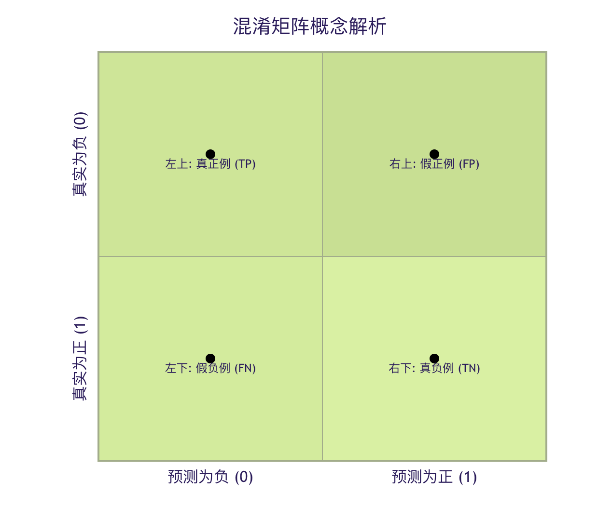
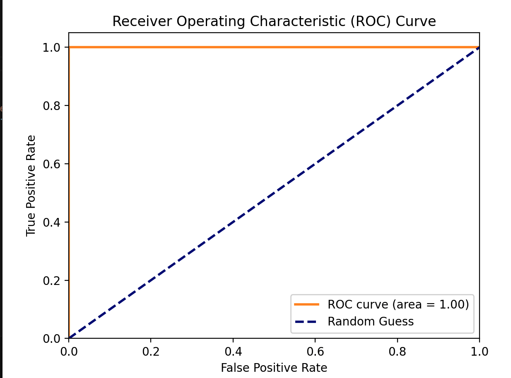

分類指標
機械学習の世界では、分類モデルを構築することはほんの第一歩に過ぎません。医者が感覚だけで病状を判断できないように、私たちも科学的な健康診断指標でモデルの健康状態を評価する必要があります。これらの指標こそが分類指標であり、モデルの予測がどれほど正確か、どこが優れているか、どこに不足があるかを教えてくれます。
今日は、これらの極めて重要な評価ツールについて一緒に学びましょう。
なぜ分類指標が必要なのか？
想像してみてください。メールがスパムかどうかを識別するモデルを訓練したとします。モデルが100通のメールを予測したとき、あなたはこう問うかもしれません：
- 「何通正しく予測できたのか？」 -> これが導くのは正解率。
- 「本当のスパムメールのうち、何通を見つけ出せたのか？」 -> これが導くのは再現率。
- 「スパムメールと判定したもののうち、実際にスパムだったのは何通か？」 -> これが導くのは適合率。
正解した数だけで評価するのは、テストの合計点だけで生徒を評価するようなもので、多くの重要な情報を見落としてしまいます。ビジネスシーンによって重視する点は異なります：
- 病気の診断：私たちは、どんな患者も見逃さないことをより重視します（高い再現率）。たとえ健康な人を多く検査することになっても（ある程度の適合率を犠牲にしてでも）です。
- スパムメールフィルタリング：私たちは、重要なメールをゴミ箱に捨てないことをより重視します（高い適合率）。たとえスパムメールの一部を見逃すことになっても（ある程度の再現率を犠牲にしても）です。
したがって、モデルの性能をさまざまな角度から総合的に評価するために、一連の指標が必要です。
中核概念：混同行列
ほとんどすべての分類指標は、ひとつの強力なツールに由来しています——混同行列。これは、モデルの予測結果を理解するための「全体像マップ」です。
混同行列とは？
これは、モデルの予測結果と実際のラベルの間のすべての4つの可能なケースを示す表です。
例
from sklearn.metrics import confusion_matrix
import seaborn as sns
import matplotlib.pyplot as plt
# 実ラベルと予測ラベルがあると仮定します。
y_true = [1, 0, 1, 1, 0, 0, 1, 0, 0, 1] # 1代表垃圾邮件，0代表正常邮件
y_pred = [1, 0, 0, 1, 0, 0, 1, 1, 0, 1] # モデルの予測結果
# 计算混淆矩阵
cm = confusion_matrix(y_true, y_pred)
print("混淆矩阵：")
print(cm)
# 出力は次のようになる：
# [[4 1] # 実際は0（正常）、予測が0のものが4個（TN）、予測が1のものが1個（FP）
# [1 4]] # 実際は1（迷惑メール）、予測0が1個（FN）、予測1が4個（TP）
よりよく理解するために、これを可視化しましょう：

この4つの中核用語を分解してみましょう：
| 用語 | 略語 | 意味 | スパムメールの例での説明 |
|---|---|---|---|
| 真陽性 | TP | モデルが「正」と予測し正、実際も「正」正。 | モデルが正しく識別できたスパムメール。 |
| 偽陽性 | FP | モデルが「正」と予測し正、しかし実際は「負」负。 | モデルが誤ってスパムメールと判定した正常なメール。 （Type I Error） |
| 真陰性 | TN | モデルが「負」と予測し负、実際も「負」负。 | モデルが正しく識別できた正常なメール。 |
| 偽陰性 | FN | モデルが「負」と予測し负、しかし実際は「正」正。 | モデルが見逃したのスパムメール。 （Type II Error） |
覚え方：
- 真/偽は予測が正しいかどうかを表します。
- 正/負はモデルの予測結果を表します。
三、核心分類指標の詳細
混同行列があれば、公式で計算するように、さまざまな評価指標を導き出すことができます。
1. 正解率 - 最も直感的な指標
正解率モデルが正しく予測したサンプルが全サンプルに占める割合を表します。
\[ \text{准确率} = \frac{TP + TN}{TP + TN + FP + FN} \]
例
accuracy = accuracy_score(y_true, y_pred)
print(f"准确率: {accuracy:.2f}") # 输出: 0.80 (8/10)
特徴と限界：
- 長所：非常に直感的で、理解しやすいことです。
- 短所：データが不均衡な場合は誤解を招く恐れがあります。例えば、メールの99%が正常なメールである場合、すべてのメールを正常と予測する「愚かなモデル」でも、正解率は99%に達しますが、スパムメールは1通も検出できません。
2. 適合率 - 「厳選」の指標
適合率モデルが「正」と予測した正例のうち、どれだけが本当の正例かを重視します。これは予測結果の信頼性或正確さを測るものです。。
\[ \text{精确率} = \frac{TP}{TP + FP} \]
問い：スパムメールと予測したメールのうち、実際にスパムメールだったのは何通でしょうか？適合率が高いということは：モデルが「これはスパムメールだ」と判断したとき、その信頼性が高いことを意味します。
例
precision = precision_score(y_true, y_pred)
print(f"精确率: {precision:.2f}") # 输出: 0.80 (TP=4, TP+FP=5)
3. 再現率 - 「取りこぼさない」指標
再現率すべての実際の正例のうち、モデルがどれだけ見つけ出せたかに注目します。これはモデルが正例を発見する能力を測ります。。
\[ \text{召回率} = \frac{TP}{TP + FN} \]
問い：実際のスパムメールのうち、私たちは何通を見つけ出せたでしょうか？再現率が高いということは：モデルが実際のスパムメールを見逃すことがほとんどないことを意味します。
例
recall = recall_score(y_true, y_pred)
print(f"召回率: {recall:.2f}") # 输出: 0.80 (TP=4, TP+FN=5)
4. F1スコア - 適合率と再現率の調和平均
適合率と再現率は通常、互いに相反します（一方を上げると、もう一方は下がりがちです）。F1スコアは、両者の調和平均であり、バランスの取れた点を見つけることを目的としています。
\[ \text{F1 分数} = 2 \times \frac{\text{精确率} \times \text{召回率}}{\text{精确率} + \text{召回率}} \]
調和平均の特徴：極端な値をより厳しく評価します。適合率と再現率の両方が高い場合にのみ、F1スコアは高くなります。
例
f1 = f1_score(y_true, y_pred)
print(f"F1分数: {f1:.2f}") # 输出: 0.80
指標の比較と選択ガイド
| 指標 | 式 | 着目点 | 適用シーン例 |
|---|---|---|---|
| 正解率 | (TP+TN)/総数 | 全体の予測正解率 | クラスが均衡しており、FPとFNのコストが同程度のシーン。 |
| 適合率 | TP/(TP+FP) | 正と予測したサンプルの正確さ | FPのコストが高い例:スパムメールフィルタリング（重要なメールを誤って削除することを恐れる）、レコメンドシステム（質の悪い商品を推薦することを恐れる）。 |
| 再現率 | TP/(TP+FN) | 実際に正のサンプルが見つけ出された割合 | FN（偽陰性）のコストが高い例:疾病スクリーニング（見逃しを恐れる）、不正検知（不正取引の見逃しを恐れる）。 |
| F1スコア | 2PR/(P+R) | 適合率と再現率のバランス | 総合的に判断する必要があり、明確な偏りがないシナリオ；クラス不均衡の場合は正解率よりも優れている。 |
四、発展指標：ROC曲線とAUC
モデルの予測結果が確率値（例：あるメールがスパムである確率が0.8）である場合、我々は閾値を設定する必要があります。閾値（例：0.5）を設定して最終的な分類を決定します。ROC曲線は、異なる閾値におけるモデルの全体的な性能を評価するのに役立ちます。
1. 真陽性率と偽陽性率
- 真陽性率：実は再現率。TPR = TP / (TP + FN)
- 偽陽性率：すべての実際の負例のうち、誤って正例と予測された割合。FPR = FP / (FP + TN)
2. ROC曲線
ROC曲線はFPRを横軸とし，TPRを縦軸とします。曲線上の各点は、特定の分類閾値に対応します。
- 理想点：左上隅 (0, 1)、すなわち FPR=0（誤報なし）、TPR=1（すべて再現）。
- ランダムライン：(0,0) から (1,1) への対角線で、ランダムに推測するモデルの性能を表します。
3. AUC値
AUC は ROC 曲線の下の面積です。
- AUC = 1：完全なモデル。
- AUC = 0.5：モデルに識別能力がなく、ランダムな推測と同等です。
- 0.5 < AUC < 1：モデルにある程度の予測能力があり、値が大きいほど良い。
- AUC < 0.5：モデルがランダムな推測よりも劣っており、通常は予測の方向が逆であることを意味します。
AUCの利点は、それがクラス不均衡に鈍感であること、そしてモデル全体のランキング能力（正サンプルを負サンプルの前に並べる能力）を評価することです。
例
import numpy as np
import matplotlib.pyplot as plt
# 予測確率があると仮定します（ここでは乱数でシミュレーション）
y_true = [1, 0, 1, 0, 1]
y_scores = [0.9, 0.4, 0.6, 0.3, 0.8] # モデルが正例と予測する確率
fpr, tpr, thresholds = roc_curve(y_true, y_scores)
roc_auc = auc(fpr, tpr)
print(f"AUC 値: {roc_auc:.2f}")
# ROC曲線を描画（オプション、matplotlibが必要）
plt.figure()
plt.plot(fpr, tpr, color='darkorange', lw=2, label=f'ROC curve (area = {roc_auc:.2f})')
plt.plot([0, 1], [0, 1], color='navy', lw=2, linestyle='--', label='Random Guess')
plt.xlim([0.0, 1.0])
plt.ylim([0.0, 1.05])
plt.xlabel('False Positive Rate')
plt.ylabel('True Positive Rate')
plt.title('Receiver Operating Characteristic (ROC) Curve')
plt.legend(loc="lower right")
plt.show()
出力：
AUC 值: 1.00

多クラス分類問題の指標
クラスが2つを超える場合（猫、犬、ウサギの認識など）、上記の指標は以下の方法で拡張できます：
- マクロ平均：まず各クラスの指標（適合率など）を計算し、次に全クラスの指標の算術平均を取ります。各クラスを平等に扱う。
- マイクロ平均：まず全クラスの TP、FP などを合計し、その合計値を使ってグローバルな指標を計算します。各サンプルを平等に扱う、大きなクラスの影響をより受けます。
Scikit-learn では、以下のaverageパラメータで指定できます：
例
# y_true と y_pred は現在マルチクラスラベルです。例：[0, 1, 2, 0, 1]
precision_macro = precision_score(y_true, y_pred, average='macro') # マクロ平均
precision_micro = precision_score(y_true, y_pred, average='micro') # マイクロ平均
六、実践演習：分類モデルの総合評価
さて、実際のデータセットで実践してみましょう。有名なアヤメ（Iris）データセットを使用します。
例
from sklearn.model_selection import train_test_split
from sklearn.linear_model import LogisticRegression
from sklearn.metrics import classification_report, confusion_matrix, accuracy_score
# 1. データの読み込み
iris = load_iris()
X = iris.data
y = iris.target
target_names = iris.target_names
# 2. 訓練セットとテストセットに分割
X_train, X_test, y_train, y_test = train_test_split(X, y, test_size=0.3, random_state=42)
# 3. 簡単なロジスティック回帰モデルを訓練
model = LogisticRegression(max_iter=200)
model.fit(X_train, y_train)
# 4. テストセットで予測
y_pred = model.predict(X_test)
y_pred_proba = model.predict_proba(X_test) # AUCのために予測確率を取得
# 5. 各種指標を計算して出力
print("=== 混同行列 ===")
print(confusion_matrix(y_test, y_test))
# 注意：多クラス分類の混同行列は N x N です
print("\n=== 分類レポート（適合率、再現率、F1を含む）===")
print(classification_report(y_test, y_pred, target_names=target_names))
# classification_report は非常に便利な関数で、複数の指標を一度に出力します。
print(f"\n=== 正解率 ===")
print(f"{accuracy_score(y_test, y_pred):.4f}")
# 6. 多クラス分類のAUCは、通常各クラスと他のクラスとの「一対多」AUCを計算し、平均を取ります。
from sklearn.metrics import roc_auc_score
# 注意：roc_auc_score は多クラス分類の場合に multi_class='ovr'（One-vs-Rest）と average を指定する必要があります。
try:
auc_ovr = roc_auc_score(y_test, y_pred_proba, multi_class='ovr', average='macro')
print(f"\n=== マクロ平均 AUC (OvR) ===")
print(f"{auc_ovr:.4f}")
except Exception as e:
print(f"\nAUC計算中にエラーが発生しました（一部のクラスがテストセットに存在しない可能性があります）: {e})
このコードを実行すると、完全なモデル評価レポートが表示されます。モデルのパラメータを変更したり、異なるモデル（例：sklearn.tree.DecisionTreeClassifier）を使用して、これらの指標がどのように変化するかを観察してください。
=== 混淆矩阵 ===
[[19 0 0]
[ 0 13 0]
[ 0 0 13]]
=== 分类报告（包含精确率、召回率、F1）===
precision recall f1-score support
setosa 1.00 1.00 1.00 19
versicolor 1.00 1.00 1.00 13
virginica 1.00 1.00 1.00 13
accuracy 1.00 45
macro avg 1.00 1.00 1.00 45
weighted avg 1.00 1.00 1.00 45
=== 准确率 ===
1.0000
=== 宏平均 AUC (OvR) ===
1.0000 その他の拡張
クリックしてノートを共有
ノートはこの記事の内容の拡張である必要があります！
記事投稿はこちらをクリック
登録招待コードの取得方法
ノートを共有する前にログインが必要です！
登録招待コードの取得方法